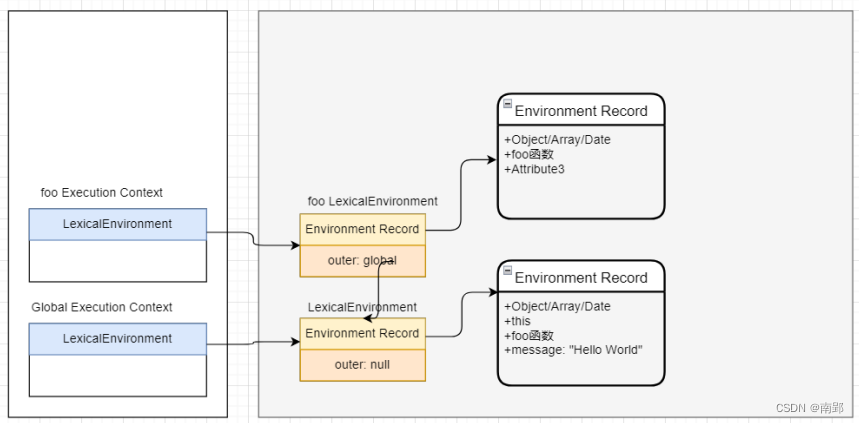
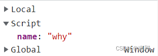
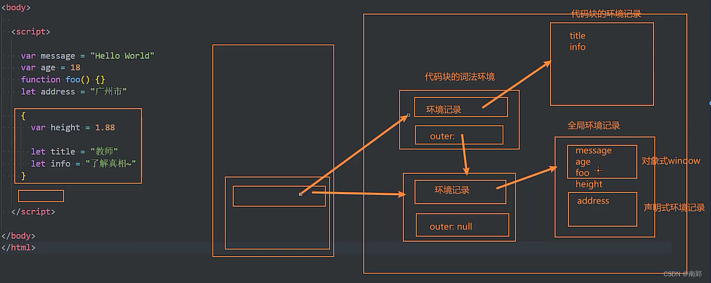
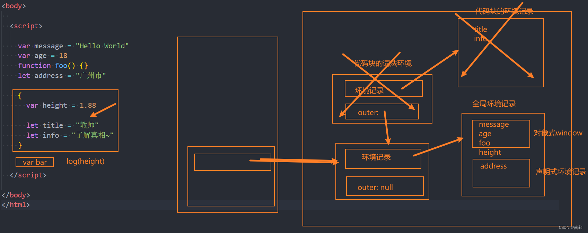
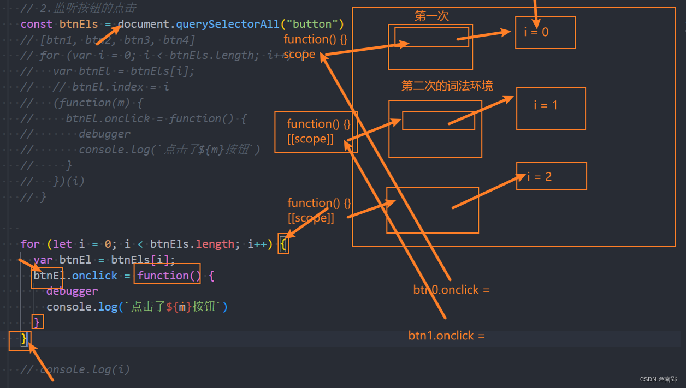
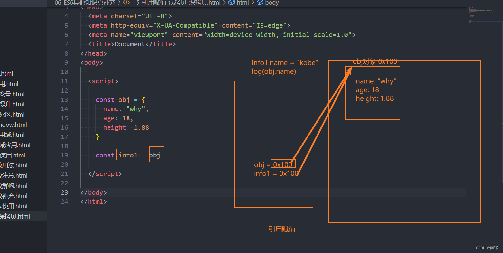
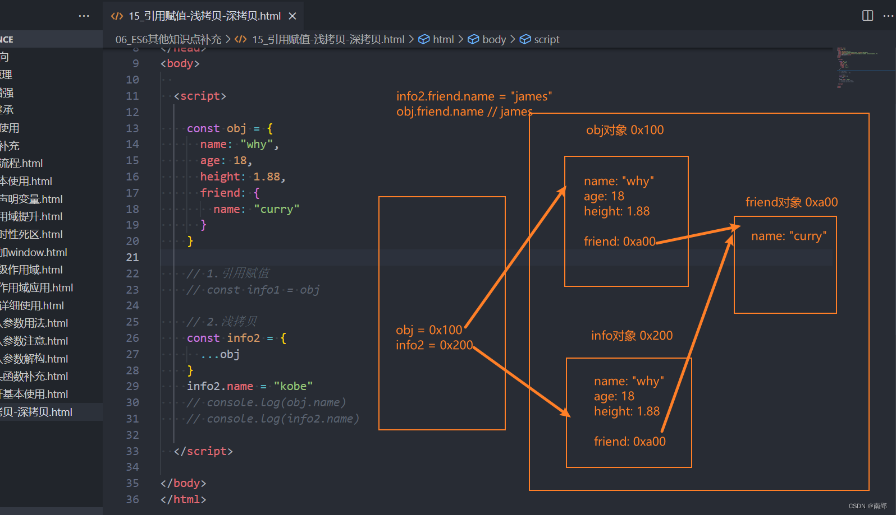
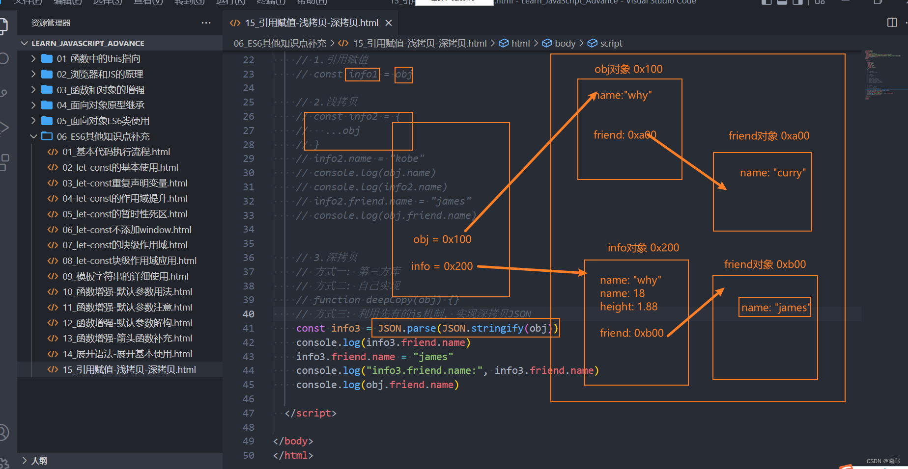
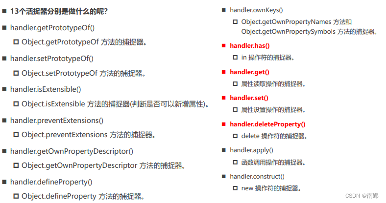
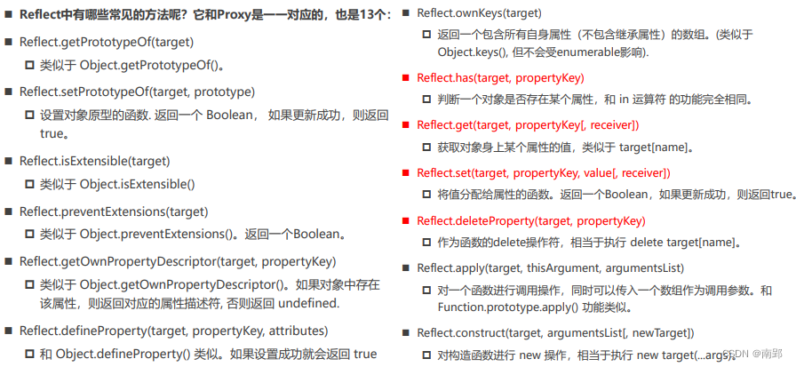

一、E6 新特性
1. ECMA 新描述概念
1.1 词法环境
词法环境（Lexical Environments）是一种规范类型，用于在词法嵌套结构中定义关联的变量、函数等标识符：
- 一个词法环境是由环境记录（Environment Record）和一个外部词法环境（outer Lexical Environment）组成；
- 一个词法环境经常用于关联一个函数声明、代码块语句、try-catch语句，当它们的代码被执行时，词法环境被创建出来
在ES5之后，执行一个代码，通常会关联对应的词法环境
执行上下文会关联两种词法环境：
- LexicalEnvironment用于处理let、const声明的标识符
- VariableEnvironment用于处理var和function声明的标识符
1.2 环境记录
环境记录分为声明式环境记录和对象式环境记录
- 声明式环境记录：声明性环境记录用于定义ECMAScript语言语法元素的效果，如函数声明、变量声明和直接将标识符绑定与ECMAScript语言值关联起来的Catch子句
- 对象式环境记录：对象环境记录用于定义ECMAScript元素的效果，例如WithStatement，它将标识符绑定与某些对象的属性关联起来
1.3 新 ECMA 描述内存图

2. let、const 用法
2.1 let、const 的基本使用
◼ let关键字：从直观的角度来说，let和var是没有太大的区别的，都是用于声明一个变量
◼ const关键字：表示保存的数据一旦被赋值，就不能被修改；但是如果赋值的是引用类型，那么可以通过引用找到对应的对象，修改对象的内容
const info = {
name: 'why',
age: 18
} // 引用类型
// info = {}
info.name = 'kobe'
console.log(info);==注意：let、const 不允许重复声明变量==
2.2 let、const 没有作用域提升
let、const 变量会在执行上下文的词法环境创建出来的时候被创建，但是是不可以访问它们的，直到词法绑定被求值
(虽然被创建出来，但不能被访问，所以可以理解为作用域没有提升)
console.log(address);
const address = '广州'2.2.1 暂时性死区 TDZ
在let、const定义的标识符真正执行到声明的代码之前，是不能被访问的
从块作用域的顶部一直到变量声明完成之前，这个变量处在暂时性死区（TDZ，temporal dead zone）
ps：取决于执行顺序，不是编写代码的位置
function foo() {
console.log(message)
}
let message = 'hello'
foo() // 可以访问2.3 不会在 window 对象上添加属性
在全局通过var来声明一个变量，事实上会在window上添加一个属性；
但是let、const是不会给window上添加任何属性的
- Global environment record:
- 合成的record
- window
- 声明式环境记录对象
var message = '广州'
// console.log(window.message);
let name = 'why'
console.log(window.name);// 报错name = 'why' 存储在Script中，message = '广州' 存储在Global中

2.4 块级作用域和应用
ES5 中，JavaScript只会形成两个作用域：全局作用域和函数作用域
ES6 中，通过let、const、function、class声明的标识符是具备块级作用域的限制的
函数拥有块级作用域，但是外面依然是可以访问
{
let age = 18
const height = 1.88
class Person {}
function foo() {
console.log('foo function');
}
}
// console.log(age); 报错
// console.log(height); 报错
// const p = new Person() 报错
foo() // 可以调用2.4.1 应用
var message = "Hello World"
var age = 18
function foo() {}
let address = "广州市"
{
var height = 1.88
let title = "教师"
let info = "了解真相~"
}
...剩余代码
跳出代码块，执行剩余代码

<button>按钮0</button>
<button>按钮1</button>
<button>按钮2</button>
<button>按钮3</button>
const btnEls = document.querySelectorAll('button')
for (let i = 0; i < btnEls.length; i++) { // 此时for{}形成一个新的词法环境
const btnEl = btnEls[i];
btnEl.onclick = function () {
console.log(`点击了${i}按钮`);
}
}
3. 模板字符串
使用字符串模板来嵌入JS的变量或者表达式来进行拼接：
- 使用``符号来编写字符串，称之为模板字符串
- 通过 ${expression} 来嵌入动态的内容
const name = 'why'
const age = 18
const info = `My name is ${name}`
console.log(info);
function foo(...args) {
console.log('参数：', args);
}
foo`my name is ${name}, my age is ${age}, my height is ${1.88}`4. ES6 函数的增强用法
4.1 函数的默认参数
在编写函数时，若没有传入参数，可以给函数一个默认值
function foo1(age, name = 'why', ...arg) {
console.log(name, age);
}
foo1(18)
console.log(foo1.length);//1- 参数的默认值我们通常会将其放到后面，剩余参数放在最后
- 默认值以及后面的参数都不计算在函数的 length 之内
4.2 默认参数解构
默认值也可以和解构一起来使用：
// 原始做法
function foo(obj = { name: 'why', age: 18 }) {
console.log(obj.name, obj.age);
}
// 解构版
function foo({ name, age } = { name: 'why', age: 18 }) {
console.log(name, age);
}
// 解构改进版
function foo({ name = 'why', age = 18 } = {}) {
console.log(name, age);
}
foo()4.3 箭头函数的补充
- 箭头函数是没有显式原型prototype的，所以不能作为构造函数，使用new来创建对象；
- 箭头函数也不绑定this、arguments、super参数
5. 展开语法
展开语法的场景：
- 在函数调用/数组构造时，将数组表达式或者string在语法层面展开；
- 在构造字面量对象时, 将对象表达式按key-value的方式展开
const names = ["abc", "cba", "nba", "mba"]
const str = "Hello"
// 数组构造
const newNames = [...names, "aaa", "bbb"]
console.log(newNames)
// 函数调用
function foo(name1, name2, ...args) {
console.log(name1, name2, args);
}
foo(...names)
foo(...str)
// 对象构造
var obj = {
name: 'why',
age: 18
}
var bar = {
...obj,
height: 1.88
}
console.log(bar);5.1 引用赋值/浅拷贝/深拷贝(重要)
const obj = {
name: 'why',
age: 18,
friend: {
name: 'curry'
}
}
//1.引用赋值
const info1 = obj
//2.浅拷贝
const info2 = {
...obj
}
info2.name = 'kobe'
console.log(obj.name, info2.name);//why kobe
info2.friend.name = 'james'
console.log(obj.friend.name)//james
//3.深拷贝
//1.第三方库
//2.手写
//3.利用现有JS机制
const info3 = JSON.parse(JSON.stringify(obj))
info3.friend.name = 'james'
console.log(info3.friend.name);
console.log(obj.friend.name);//curry引用赋值：直接将内存地址传给新变量（在新变量上修改会影响原变量）
浅拷贝：新创建一个对象将原对象中内容拷贝过来，但只拷贝一层
深拷贝：全部重新创建对象

6. 数值的表示
- 规范二进制和八进制写法
- 数字过长时，可以使用_作为连接符
// 1.进制
console.log(100)//十进制
console.log(0b100)//二进制
console.log(0o100)//八进制
console.log(0x100)//十六进制
// 2.长数字的表示
const money = 100_00_00_0000_00_007. Symbol 符号使用
一个对象，我们希望在其中添加一个新的属性和值，但是我们在不确定它原来内部有什么内容的情况下，很容易造成冲突，从而覆盖掉它内部的某个属性
Symbol就是为了解决上面的问题，用来生成一个独一无二的属性
- Symbol即使多次创建值，它们也是不同的：函数执行后每次创建出来的值都是独一无二的
Object.keys()得到的值不包含Symbol- 利用
Object.getOwnPropertySymbols()得到只含有Symbol的数组 - 在创建Symbol值的时候传入一个描述description
- 利用
const s1 = Symbol()
const s2 = Symbol()
const obj = {
name: 'why',
[s1]: 'aaa',
}
obj[s2] = 'bbb'
console.log(Object.keys(obj));//不包含Symbol
const symbolKeys = Object.getOwnPropertySymbols(obj)
for (const key of symbolKeys) {
// console.log(key);// 得到symbolKeys中的所有值（分开）
console.log(obj[key]);
}
// Symbol函数直接生成的值, 都是独一无二
const s3 = Symbol('ccc')
console.log(s3.description);//ccc
const s4 = Symbol(s3.description)
console.log(s3 === s4)//false如果我们想创建相同的Symbol：
- 使用
Symbol.for方法来做到这一点 - 通过
Symbol.keyFor方法来获取对应的值
const s3 = Symbol('ccc')
const s5 = Symbol.for(s3.description)
console.log(s5);// Symbol(ccc)
console.log(Symbol.keyFor(s5));//ccc
const s6 = Symbol.for(s3.description)
console.log(s5 === s6)//true8. 新增数据结构
在ES6之前，我们存储数据的结构主要有两种：数组、对象。
在ES6中新增了另外两种数据结构：Set、Map，以及它们的另外形式WeakSet、WeakMap
8.1 Set、WeakSet
Set是一个新增的数据结构，可以用来保存数据，类似于数组，但是和数组的区别是元素不能重复
const set = new Set()//需通过Set构造函数，无字面量创建方式
set.add(12)
set.add(22)
set.add(35)
set.add(22)
console.log(set);
set.forEach(item => console.log(item))
// 应用场景：数组去重
const names = ['abc', 'cba', 'nba', 'cba']
const newNameSet = new Set(names)
const newName = Array.from(newNameSet)
console.log(newName);Set常见的属性：
size：返回Set中元素的个数
Set常用的方法：add(value)：添加某个元素，返回Set对象本身delete(value)：从set中删除和这个值相等的元素，返回boolean类型has(value)：判断set中是否存在某个元素，返回boolean类型clear()：清空set中所有的元素，没有返回值forEach(callback, [, thisArg])：通过forEach遍历set- 支持for of的遍历的。
WeakSet也是内部元素不能重复的数据结构
与Set的区别：
- WeakSet中只能存放对象类型，不能存放基本数据类型
- WeakSet对元素的引用是弱引用，如果没有其他引用对某个对象进行引用，那么GC可以对该对象进行回收
WeakSet常见的方法：
add(value)：添加某个元素，返回WeakSet对象本身delete(value)：从WeakSet中删除和这个值相等的元素，返回boolean类型has(value)：判断WeakSet中是否存在某个元素，返回boolean类型- WeakSet不能遍历（只是对对象的弱引用，存储到WeakSet中的对象是没办法获取的）
8.2 Map、WeakMap
Map，用于存储映射关系
在之前使用对象来存储映射关系，他们有什么区别呢？
- 对象存储映射关系只能用字符串（ES6新增了Symbol）作为属性名（key）
- 某些情况下我们可能希望通过==其他类型==作为key（比如对象）这个时候会自动将对象转成字符串来作为key
const info1 = { name: 'why' }
const info2 = { age: 18 }
const map = new Map()
map.set(info1, 'aaa')
map.set(info2, 'bbb')
console.log(map);
map.forEach(item => console.log(item))// 得到key对应的value
for (const item of map) {
const [key, value] = item
console.log(key, value);
}Map常见的属性：
size：返回Map中元素的个数
Map常见的方法：set(key, value)：在Map中添加key、value，并且返回整个Map对象get(key)：根据key获取Map中的valuehas(key)：判断是否包括某一个key，返回Boolean类型delete(key)：根据key删除一个键值对，返回Boolean类型clear()：清空所有的元素forEach(callback, [, thisArg])：通过forEach遍历Map- Map可以通过for of进行遍历
WeakMap，也是以键值对的形式存在的
和Map的区别：
- WeakMap的key只能使用对象，不接受其他的类型作为key
- key对象的引用是弱引用，如果没有其他引用引用这个对象，那么GC可以回收该对象
WeakMap常见的方法：
set(key, value)：在Map中添加key、value，并且返回整个Map对象get(key)：根据key获取Map中的valuehas(key)：判断是否包括某一个key，返回Boolean类型delete(key)：根据key删除一个键值对，返回Boolean类型- 不能遍历
二、ES7~ES13 知识点
1. ES7 知识点
判断一个数组中是否包含一个指定的元素
arry.includes('why', fromIndex) //true
指数运算符：**
2. ES8 知识点
2.1 对象相关属性
通过
Object.values()来获取所有的value值通过
Object.entries()获取到一个数组，数组中会存放可枚举属性的键值对数组
const obj = {
name: 'why',
age: 18,
height: 1.88,
}
const keys = Object.keys(obj)
console.log(keys);
const values = Object.values(obj)
console.log(values);
const entries = Object.entries(obj)// [['name', 'why'], ['age', 18], ['height', 1.88]]
for (const entry of entries) {
const [key, value] = entry
console.log(key, value);
}
console.log(Object.entries(['abc', 'nba']));// [['0', 'abc'], ['1', 'nba']]
console.log(Object.entries('Hi'));// [['0', H], ['1', i]]2.2 字符串填充方法
padStart/padEnd 分别对字符串的首尾进行填充
//应用：时间格式化
const min = '15'.padStart(2, '0')
const sec = '6'.padStart(2, '0')
console.log(`${min}:${sec}`);//15:06
//应用：敏感数据格式化
let cardNum = '342601199910274626'
const sliceNum = cardNum.slice(-4)
cardNum = sliceNum.padStart(cardNum.length, '*')
const card = document.querySelector('h1')
card.innerHTML = cardNum //**************46263. ES10 知识点
3.1 flat、flatMap
flat() 方法会按照一个可指定的深度递归遍历数组，并将所有元素与遍历到的子数组中的元素合并为一个新数组返回
const nums = [10, 20, [111, 222], [[123, 321], [231, 312]]]
const newNums1 = nums.flat(1)
console.log(newNums1);// [10, 20, 111, 222, [123, 321], [231,312]]
const newNums2 = nums.flat(2)
console.log(newNums2);flatMap() 方法首先使用映射函数映射每个元素，然后将结果压缩成一个新数组。
- flatMap是先进行map操作，再做flat的操作；
- flatMap中的flat相当于深度为1；
const messages = [
"Hello World aaaaa",
"Hello Coderwhy",
"你好啊 李银河"
]
//先map 再flat
const newMessage = messages.map(item => item.split(' '))
console.log(newMessage);// [['Hello', 'World', 'aaaaa'],['Hello', 'Coderwhy'],['你好啊', '李银河']]
const finaMessage = newMessage.flat(1)
console.log(finaMessage);
//flatmap
const finaMessages = messages.flatMap(item => item.split(' '))
console.log(finaMessages);3.2 Object.fromEntries
Object.entries 将一个对象转换成 entries，Object.formEntries将 entries 转换成对象
//应用
const searchString = '?name=why&age=18&height=1.88'
const params = new URLSearchParams(searchString)
console.log(params.get('name'));
console.log(params.get('age'));
for (const item of params) { //相当于params.entries
console.log(item);
}
const paramObj = Object.fromEntries(params)
console.log(paramObj.name);
console.log(paramObj.age);3.3 清除字符串首尾空格
const message = " Hello World "
console.log(message.trim())
console.log(message.trimStart())
console.log(message.trimEnd())4. ES11 知识点
4.1 BigInt
过大的数字，在其后加上n
4.2 空值合并运算符
function foo(arg1 = '我是默认值') {
//不严谨的写法
// arg1 = arg1 ? arg1 : '我是默认值'
// arg1 = arg1 || '我是默认值'
//严谨的写法
// arg1 = (arg1 === undefined || arg1 === null) ? '我是默认值' : arg1
//ES6后
arg1 = arg1 ?? '我是默认值'
}
foo('')//null和undefined会成为默认值
//''、0、false不会输出默认值4.3 可选链的使用
让代码在进行null和undefined判断时更加清晰和简洁
const obj = {
name: 'why',
friend: {
name: 'kobe',
// running: function () {
// console.log('running~');
// }
}
}
obj?.friend?.running?.()5. ES12 知识点
5.1 Finalization Registry
FinalizationRegistry 对象可以让你在对象被垃圾回收时请求一个回调。
- 当一个在注册表中注册的对象被回收时，请求在某个时间点上调用一个清理回调。（清理回调有时被称为 finalizer ）
- 通过调用register方法，注册任何你想要清理回调的对象，传入该对象和所含的值
let obj = { name: 'why', age: 18 }
const finalRegistry = new FinalizationRegistry((value) => {
console.log('对象被回收了', value)
})
finalRegistry.register(obj, 'why')
obj = null5.2 弱引用
如果我们默认将一个对象赋值给另外一个引用，那么这个引用是一个强引用；如果我们希望是一个弱引用的话，可以使用WeakRef
let obj = {name: 'why'}
let info = new WeakRef(obj)5.3 逻辑赋值运算符
// 赋值运算符
let counter = 100
// counter = counter + 100
counter += 100
// 逻辑赋值运算符
function foo(message) {
// 1.||逻辑赋值运算符
message = message || "默认值"
message ||= "默认值"
// 2.??逻辑赋值运算符
// message = message ?? "默认值"
message ??= "默认值"
console.log(message)
}
foo("abc")
foo()
// 3.&&逻辑赋值运算符
let obj = {
name: "why"
}
// obj = obj && obj.name
obj &&= obj.name
console.log(obj)5.4 字符串全部替换
const message = "my name is why, why age is 18"
const newMessage = message.replace("why", "kobe")
const newMessage2 = message.replaceAll("why", "kobe")
console.log(newMessage)
console.log(newMessage2)6. ES13 知识点
6.1 at()
应用于在数组、字符串查找元素
var names = ['abc', 'cba', 'nba']
console.log(names.at(1))//cba
console.log(names.at(-1))//nba
var str = 'Hello'
console.log(str.at(1))
console.log(str.at(-1))6.2 对象属性 hasOwn
Object中新增了一个静态方法（类方法）： hasOwn(obj, propKey)
用于判断一个对象中是否有某个自己的属性
const obj = {
name: 'why',
__proto__: {
address: '广州'
}
}
// console.log(obj.hasOwnProperty('name'));
// console.log(obj.hasOwnProperty('address'));
// hasOwn替换hasOwnProperty，防止对象内部有重写hasOwnProperty
console.log(Object.hasOwn(obj, 'name'));
console.log(Object.hasOwn(obj, 'address'));6.3 class 中的新成员
public instance fields
public static fields
private instance fields
private static fields
static block
class Person {
// 1.实例属性
// 对象属性: public 公共 -> public instance fields
height = 1.88
// ES13对象属性: private 私有: 程序员之间的约定
#intro = "name is why"
// 2.类属性(static)
// 类属性: public
static totalCount = "70亿"
// 类属性: private
static #maleTotalCount = "20亿"
constructor(name, age) {
// 对象中的属性: 在constructor通过this设置
this.name = name
this.age = age
this.address = "广州市"
}
// 3.静态代码块
static {
console.log("初始化")
}
}
const p = new Person("why", 18)
// console.log(p.#intro)
console.log(Person.height);//undefined
console.log(Person.totalCount);//70亿三、Proxy 和 Reflect 监听
1. Proxy
需求：有一个对象，我们希望监听这个对象中的属性被设置或获取的过程
ES6之前，利用Object.defineProperty
const obj = {
name: 'why',
age: 18
}
const keys = Object.keys(obj)
// 遍历对象中每个属性
for (const key of keys) {
let value = obj[key]
Object.defineProperty(obj, key, {
set: function (newValue) {
console.log(`监听：给${key}设置了新的值`, newValue);
value = newValue
},
get: function () {
console.log(`监听：获取${key}的值`);
return value
}
})
}
console.log(obj.name);
obj.name = 'kobe'缺点：Object.defineProperty设计的初衷，不是为了去监听截止一个对象中 所有的属性的；无法监听更加丰富的操作，比如新增属性、删除属性
1.1 Proxy 基本使用
在ES6中，新增了一个Proxy类，用于帮助我们创建一个代理：
- 需要
new Proxy()对象，并且传入需要侦听的对象以及一个处理对象，可以称之为handlerconst p = new Proxy(target, handler)
- 之后的操作都是直接对Proxy的操作，而不是原有的对象，在handler里面进行侦听
const obj = {
name: 'why',
age: 18
}
const objProxy = new Proxy(obj, {
set: function (target, key, newValue) {
console.log(`给属性${key}设置了新的值：`, newValue);
target[key] = newValue
},
get: function (target, key) {
console.log(`获取属性${key}的值`);
return target[key]
},
deleteProperty: function (target, key) {
console.log(`监听: 监听删除${key}属性`)
delete obj.key
},
has: function (target, key) {
console.log(`监听: 监听in判断 ${key}属性`)
return key in target
}
})
console.log(objProxy.name);//why
objProxy.name = 'kobe'
console.log(objProxy.name);//kobe
console.log(obj);
delete objProxy.name
console.log("age" in objProxy)1.2 Proxy 捕获器
set函数有四个参数：
- target：目标对象（侦听的对象）
- property：将被设置的属性key
- value：新属性值
- receiver：调用的代理对象
get函数有三个参数：
- target：目标对象（侦听的对象）
- property：被获取的属性key
- receiver：调用的代理对象

1.3 construct 和 apply
捕捉器中还有construct和apply，它们是应用于函数对象的
function foo(num1, num2) {
console.log(this, num1, num2)
}
const fooProxy = new Proxy(foo, {
apply: function (target, thisArg, otherArgs) {
console.log("监听执行了apply操作")
target.apply(thisArg, otherArgs)
},
construct: function (target, otherArray) {
console.log("监听执行了new操作")
console.log(target, otherArray)//[function foo] ['aaa','bbb']
return new target(...otherArray)
}
})
// fooProxy.apply("abc", [111, 222])
new fooProxy("aaa", "bbb")2. Reflect
Reflect也是ES6新增的一个API，它是一个对象，字面的意思是反射，提供了很多操作 JavaScript 对象的方法
2.1. Reflect 常见方法
Object作为一个构造函数，这些操作实际上放到它身上并不合适；另外还包含一些类似于 in、delete操作符，让JS看起来是会有一些奇怪的
- 所以在ES6中新增了Reflect，让我们这些操作都集中到了Reflect对象上
- 另外在使用Proxy时，可以做到不操作原对象
- 返回值为bool值，可以直接判断
const obj = {
name: "why",
age: 18
}
// 1.用以前的方式进行操作
// delete obj.name
// if (obj.name) {
// console.log("name没有删除成功")
// } else {
// console.log("name删除成功")
// }
// 2.Reflect
if (Reflect.deleteProperty(obj, "name")) {
console.log("name删除成功")
} else {
console.log("name没有删除成功")
}
2.2 Reflect 和 Proxy 一起使用
可以将之前Proxy案例中对原对象的操作，都修改为Reflect来操作：
const obj = {
_name: 'why',
set name(newValue) {
console.log("this:", this) // this默认是obj，receiver后变为objProxy
this._name = newValue // 此传参过程再次调用objProxy.set
},
get name() {
return this._name
}
}
const objProxy = new Proxy(obj, {
set: function (target, key, newValue, receiver) {
// 好处一：不再直接操作原对象
// 好处二：返回bool值，可判断本次操作是否成功
console.log('Proxy中设置方法被调用');
// target[key] = newValue
const isSuccess = Reflect.set(target, key, newValue, receiver)
if (!isSuccess) {
throw new Error(`set ${key} failure`)
}
/* 好处三：
receiver就是外层Proxy对象
Reflect.set/get最后一个参数, 可以决定对象访问器setter/getter的this指向
*/
},
get: function (target, key, receiver) {
console.log("proxy中获取方法被调用")
return Reflect.get(target, key, receiver)
}
})
objProxy.name = 'kobe'
console.log(obj);
console.log(objProxy.name);2.3 Reflect 的 construct 用法
stu 的类型是 Student，但想执行Person()的代码
function Person(name, age) {
this.name = name
this.age = age
}
function Student() {
}
const stu = Reflect.construct(Person, ['why', 18], Student)
console.log(stu);
console.log(stu.__proto__ === Student.prototype);//true